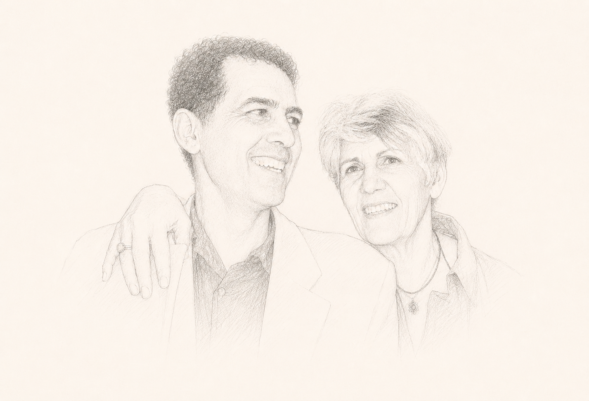
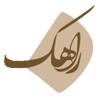

ویدا حاجبی (۱۳۱۴–۱۳۸۵) نویسنده و فعال سیاسی ایرانی است که با نگاهی مستقل و انتقادی، تجربههای خود از مبارزه و زندان را در آثارش روایت کرده است. او از همان ابتدا روحیهای سرکش و پرسشگر داشت؛ در قالبها نمیگنجید و بهسادگی تن به چارچوبهای از پیش تعیینشده نمیداد. بهعنوان زن، نه در نقشِ ایثارگرِ کلاسیک تعریف شد و نه در چهارچوبهای از پیشساخته آرام گرفت. در عین حال، در دل این سرکشی به ظرافتهای زندگی نیز وفادار ماند. این روحیهی نقد و جستوجو، و پایبندیاش به شناخت تاریخ، در آثارش جلوهای روشن پیدا کرد. بهویژه در داد بیداد، که به پلی برای صداهای گوناگونِ زنان از تجربهی زندان بدل شد. او از بازنگری در اندیشههای خود هراسی نداشت؛ پیوسته در مسیرِ شناخت، خود را از نو میساخت و جهان را دوباره میفهمید. از محمد مصدق تا فیدل کاسترو، از کوچههای تهران تا پاریس، پراگ، کوبا و الجزایر، زندگی و نگاه او در پیوندی میان تاریخ و تجربه شکل گرفت. در کتاب یادها ویدا روایت زندگی خویش را باز می گوید؛ روایتی که در عین شخصی بودن بخشی از تاریخ یک دوران است. ویدا نه در پی قهرمانسازی بود و نه خود را قهرمان میخواست؛ سادگی را ارج مینهاد.
بیوگرافیکتابها


ترجمهها و مقالات

با یاد پسرم، روشنایی زندگیم
«در پی اختلاف نظرهای سیاسی در تحریریه، مجله «آغازی نو» کارش به تعطیلی کشید. دو سالی سرخورده و افسرده، از کار و زندگی افتادم. هر بار که با پسرم رامین دردل میکردم با شکیبایی میپرسید: «پس خودت چی؟ خودت چه کاره بودی؟» تا سرانجام زیر نگاه با فاصله و شکیبای پسرم، پرسشها و دودلیهایم نسبت به خودم و آنچه در مسیر زندگیم دیده و زیسته بودم شکل مشخص و منسجمی یافت. جزماندیشیها، مصلحتهای سیاسی، الگوبرداریها، انتخابها و نادرستی بسیاری از توهمها و پندارهای گذشته برایم روشن شد. به فکر بازنگری به روندهای سیاسی گذشته افتادم. شروع کردم به یادداشتبرداری از تجربههای شخصیم و پرداختن به تجربههای زندان. تدوین کتاب داد بیداد را، و در پیامد آن یادها را، مدیون پسرم رامین هستم...»

مصاحبهها و ویدیوها
-
 ویدئو
ویدئو
 بی بی سی فارسی
به عبارت دیگر: گفتگو با ویدا حاجبی
بی بی سی فارسی
به عبارت دیگر: گفتگو با ویدا حاجبی
-
ویدئو
برای کتاب: «سبز آبی، سپس خاکستری»
ویدیواز اشکان نوروزخانی برای کتابش: »سبز آبی، خاکستری«، آپارتمان ویدا، پاریس سال ۱۳۹۵
برای خرید کتاب »سبز آبی، خاکستری« میتوانید از وبسایت رسمی انتشارات استفاده کنید:
-
 متن
ارجنامه ویدا حاجبی تبریزی: به احترام شهامت در نقد گذشته خود
متن
ارجنامه ویدا حاجبی تبریزی: به احترام شهامت در نقد گذشته خود
»سال ۱۳۸۹، هنگامی که خبر انتشار کتاب »یادها« به نگارش ویدا حاجبی تبریزی از آنسوی آبها به گوشمان رسید، قصد کردیم تا به پاس صداقت این زن ایرانی که با عبور از دالان دود و آتش و خون و اسلحه، به طرز شگفتانگیزی به نقد این شیوه خشونتبار اندیشه قهر انقلابی و خشونتهای سیاسی نشسته ـ ویژهنامهای در مدرسه فمینیستی منتشر کنیم تا بلکه نسل ما را با پیامدهای زیانبار ناشی از آن آشنا سازد.«
-
متن

راهک ویدا حاجبی تبریزی: پشیمان نیستم!»فکر نمیکنم پشیمانی امری منفی باشد. چهبسا گاهی بسیار هم لازم و مثبت است. با این حال، من از مسیری که در گذشته پیمودهام، هیچگاه پشیمان نبودهام و نیستم؛ چرا که همواره با شعور و فهمی که در هر دوره از زندگیام از آن برخوردار بودم، عمل کردهام، حتی اگر امروز آن عمل را نادرست بدانم. از اینکه فکر و نظر امروزم با دیروزم متفاوت است، نهتنها پشیمان نیستم، بلکه خشنود هم هستم. به همین دلیل امید دارم که فردا هم فهم و شعوری فراتر از امروز به دست آورم و قادر باشم با نگاهی نقادانه به کار امروزم بنگرم.«
-
متن
عصر نو
بازتاب تاریخ از نگاه فرح دیبا
-
 صوت
ویدا حاجبی تبریزی از فمینیسم و حقوق زنان سخن میگوید
صوت
ویدا حاجبی تبریزی از فمینیسم و حقوق زنان سخن میگوید
در ادامه، سخنان ویدا حاجبی را میشنوید که طی مصاحبهای با او، درباره مسائلی همچون فمینیسم و حقوق زنان ضبط شده است. این مصاحبه بخشی از ویژهنامهای است که بهمنظور بزرگداشت او، در مهرماه ۱۳۹۱ توسط مدرسه فمینیستی تهیه شده است.
ویدا، معنای زندگی
در این دفتر، ویدا و جنبههای گوناگون زندگیاش را از نگاه دوستان و نزدیکانش روایت خواهیم کرد. جای نوشتههای بسیاری از دوستانش خالیست؛ چه آنها که نوشتن از ویدا برایشان دشوار بود، و چه آنها که دسترسی بهشان برای من ممکن نبود. امیدوارم این دفتر بتواند تصویری چندوجهی از ویدا به خواننده بدهد؛ تصویری از زنی که شاید در سالهایی قهرمان بسیاری بود ولی قهرمانسازی را زیر سؤال میبرد. زنی که میتوانست با فاصله به خود نگاه کند و بی هیچ ملاحظهای گذشتهاش را نقد کند؛ چراکه در جستجوی شناخت بود: شناخت خود و جهان پیرامون. او بیش از هر هویتی، به یگانه بودن با خود متعهد بود.
دانلود کتاب


{kind=link}
{kind=link}
{kind=link}